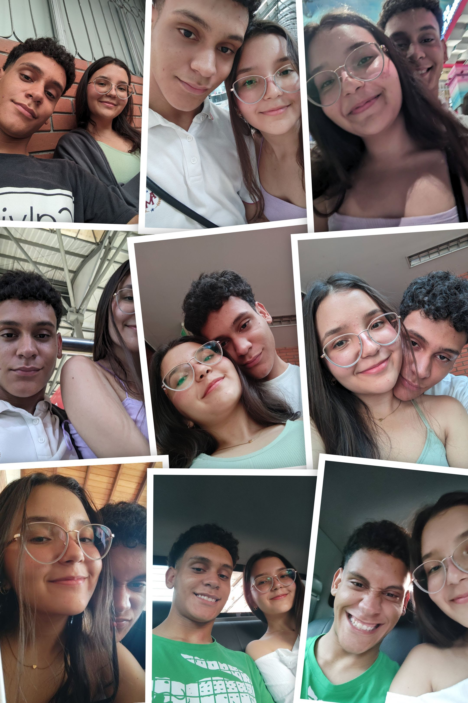

Hola Bianca primero que nada espero que te encuentres bien segundo feliz cumpleaños espero que te llegue la carta esa carta la escribo el día 12/06/25. Han pasado muchas cosas últimamente entre nosotros, espero que te guste el detalle aunque tampoco sé si lo recibas. Espero a que sí punto quiero decirte que la pases bien en tu día y que te llene muchas bendiciones y de mucha alegría cuídate mucho la verdad no creo que llegue a estar presente.
Aparte de todo lo bueno y lo malo que ha pasado te quiero decir mi niña que eres una mujer maravillosa, talentosa, amable, respetuosa y muy tranquila aunque tampoco eres perfecto pero eres quién eres y por eso te amo. Sí lo he dicho bien te amo para mí decir te quiero nos expresa todo lo que siento. no sé si mi palabra se llegan al corazón o si te haga llorar espero que no sea lo segundo por mí no te preocupes. La verdad es que no te olvido y tampoco tengo la intención de olvidarte ya que todas las noches le pido a mi Dios que te protege y que te bendiga.
Siento que decirte esto puede ser algo molesto porque no es la única vez que lo hablamos pero todavía me sigo haciendo la pregunta de que ¿si podríamos estar juntos? Yo me respondo que sí pero en el momento de escribir esto nos hemos dado un tiempo. Al cual le pido a Dios que no sea perpetuo o lejano no voy a negar que te espero porque la verdad es que esperare el tiempo que necesites y aún así le pido a Dios todas las noches que me colabore.
Pienso en ti todo el tiempo pienso en lo que seríamos si no hubiera cometido tantos errores Y lo siento si en algún momento llegué a ser pesado o molesto, si te presioné o no te hice sentir todo lo que te amo.
Quiero una vida contigo ojalá fuera larga y no tan corta, y espero que la vida nos vuelva a unir. Que te arriesgues a amarme, abrazarme y besarme que te arriesgas a estar con este negro jajaja.
Me di cuenta que mi mayor miedo era perder a alguien el cual me quiere y no era la soledad porque la soledad es estar sin ti. Gracias por todos los momentos (Buenos o malos) Gracias porque a tu lado sentí cosas que pensé que nunca sentiría o que ni las merecía (un abrazo, un "te extraño", una sonrisa como la tuya que por cierto me encanta y un beso tan mágico como los tuyos).
Te esperaré, el por qué no sé, cuando simplemente puede ser que tengamos que afrontar esto para poder ser mejor y volver a encontrarnos y enamorarnos.
Espero que ese día llegue no sea muy lejano porque sí soy algo apresurado pero cuando sabes que esa persona es la ideal no dudas en nada de lo que hagas, pienses o sientas por esa persona. Esperare un mensaje en algún momento.
Y pues eso sería todo espero que leas este mensaje que no estés triste y que no te preocupes que voy a respetar tu tiempo solamente pues quería darte este mensaje y ese detalle el día de tu cumpleaños porque tú alegraste el mío yo no sé si alegro el tuyo pero espero que sí espero que hayas entendido la letra en la carta escrita aquí en esta página he modificado un poco el texto si alcanzas a leer el otro te darás cuenta y pues nada mi niña espero que vuelvas a mi vida. Me duele decir esto pero te tengo que decir hasta ¿pronto?
Te amo 2.5 millones Bianca, que tengas un feliz 19 cumpleaños.